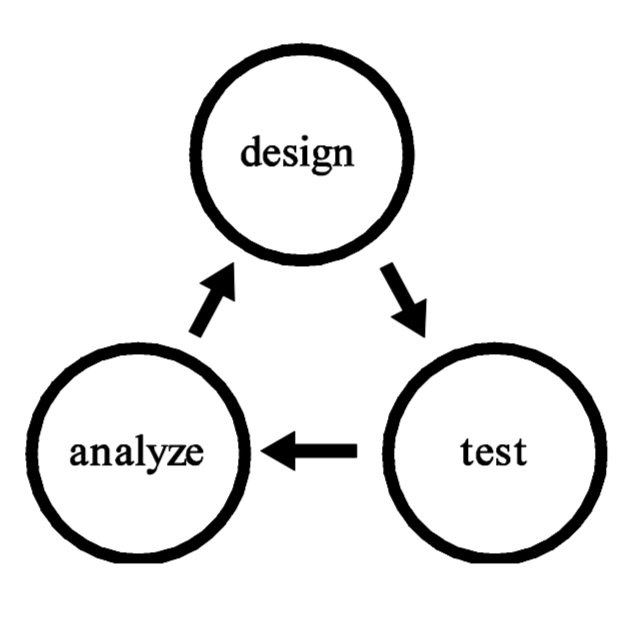

Game design is the process of designing the content and rules of a game in the pre-production stage and involves concepts such as gameplay, environment, storyline, and characters. Game design requires artistic vision, technical knowledge, and an understanding of how players will interact with the game. A game designer creates the core mechanics of a game, including its rules, objectives, challenges, and rewards. They also design the user interface and overall user experience to ensure that players can easily navigate and enjoy the game.
Design is a way to ask questions. Design research, when it occurs through the practice of design itself, is a way to ask larger questions beyond the limited scope of a particular design problem. When design research is integrated into the design process, new and unexpected questions emerge directly from the act of design.
One such research design methodology: the iterative design process, is a design methodology based on a cyclic process of prototyping, testing, analyzing, and refining a work in progress.
In iterative design, interaction with the designed system is used as a form of research for informing and evolving a project, as successive versions, or iterations of a design are implemented.
Because the experience of a viewer/user/player/etc cannot ever be completely predicted, in an iterative process design decisions are based on the experience of the prototype in progress. The prototype is tested, revisions are made, and the project is tested once more. In this way, the project develops through an ongoing dialogue between the designers, the design, and the testing audience.
In the case of games, iterative design means playtesting.
Throughout the entire process of design and development, your game is played. You play it. The rest of the development team plays it. Other people in the office play it. People visiting your office play it. You organize groups of testers that match your target audience. You have as many people as possible play the game. In each case, you observe them, ask them questions, then adjust your design and playtest again.
This iterative process of design is radically different than typical retail game development. More often than not, at the start of the design process for a computer or console title, a game designer will think up a finished concept and then write an exhaustive design document that outlines every possible aspect of the game in minute detail. Invariably, the final game never resembles the carefully conceived original. A more iterative design process, on the other hand, will not only streamline development resources, but will also result in a more robust and successful final product.
Game development is the process of creating a game from concept to final product. It involves a multidisciplinary approach that includes game design, programming, art and animation, sound design, and testing. Game development typically involves several stages, including pre-production, production, and post-production. During pre-production, the game concept is developed, and the game's mechanics and features are defined. In the production stage, the game is built, and assets such as graphics, sound effects, and music are created. Finally, in post-production, the game is tested for bugs and glitches, and any necessary changes are made before the game is released to the public.
The game development process typically involves several stages, including:
- Concept Development: This stage involves brainstorming and developing the initial concept for the game, including its genre, storyline, and gameplay mechanics.
- Pre-Production: In this stage, the game design document is created, and the game's mechanics, features, and art style are defined. The development team is assembled, and a project plan is created.
- Production: This stage involves building the game, creating assets such as graphics, sound effects, and music, and programming the game's mechanics and features.
- Testing: In this stage, the game is tested for bugs and glitches, and any necessary changes are made to improve gameplay and user experience.
- Post-Production: This stage involves finalizing the game, preparing it for release, and marketing the game to potential players.
In this course, we will be creating both traditional games like board games and card games. For these types of games, we will simply be using pen, paper, and any other physical materials we may need.
However, for video games, we will need to use a game engine. A game engine is a software framework designed for the creation and development of video games. It provides developers with a set of tools and features that simplify the game development process, allowing them to focus on creating the game's content rather than building everything from scratch. Game engines typically include features such as graphics rendering, physics simulation, audio processing, input handling, and scripting capabilities. Some popular game engines include Unity, Unreal Engine, Godot, and CryEngine. These engines are used by both indie developers and large game studios to create games for various platforms, including PC, consoles, and mobile devices.
Unity is a powerful and widely used game engine that provides a comprehensive set of tools and features for game development. It supports 2D and 3D game development, as well as virtual reality (VR) and augmented reality (AR) experiences. Unity offers a user-friendly interface, a robust asset store, and a large community of developers, making it an excellent choice for both beginners and experienced game developers.
We will be using the free version of Unity, which provides access to most of the engine's features and is suitable for small to medium-sized projects. You can download Unity for free from the official website: https://unity.com/. Make sure to check the system requirements to ensure that your computer meets the necessary specifications to run Unity smoothly.
Game development tools are software applications and frameworks that assist developers in creating, designing, and managing various aspects of game development. These tools can range from game engines to asset creation software, version control systems, and project management tools. Here are some common types of game development tools:
- Game Engines: As mentioned earlier, game engines like Unity, Unreal Engine, and Godot provide a comprehensive set of tools for building and deploying games across multiple platforms.
- Asset Creation Software: Tools like Blender, Maya, and 3ds Max are used for creating 3D models, animations, and textures. For 2D art, software like Adobe Photoshop, Illustrator, and GIMP are commonly used.
- Audio Tools: Software like Audacity, FL Studio, and Ableton Live are used for creating and editing sound effects and music for games.
- Version Control Systems: Tools like Git, SVN, and Perforce help developers manage changes to their codebase and collaborate with team members.
- Project Management Tools: Applications like Trello, Jira, and Asana help teams organize tasks, track progress, and manage deadlines.
- Testing and Debugging Tools: Tools like Unity Test Framework, NUnit, and Visual Studio Debugger assist developers in identifying and fixing bugs in their games.
- Collaboration Tools: Platforms like Slack, Discord, and Microsoft Teams facilitate communication and collaboration among team members.
These tools are essential for streamlining the game development process, improving productivity, and ensuring the successful completion of a game project.
In this class, you will work both individually and in teams to create games. Working in a team allows you to collaborate with others, share ideas, and divide tasks based on individual strengths and skills. Here are some common roles in a game development team:
- Game Designer: Responsible for creating the game's concept, mechanics, and overall design.
- Programmer: Writes the code that brings the game to life, implementing gameplay mechanics, AI, and other features.
- Artist: Creates the visual elements of the game, including characters, environments, and UI design.
- Animator: Brings characters and objects to life through animation.
- Sound Designer: Creates sound effects and music to enhance the game's atmosphere.
- Producer/Project Manager: Oversees the development process, manages timelines, and ensures the project stays on track.
- Tester/QA: Tests the game for bugs and provides feedback on gameplay and user experience.
Effective communication and collaboration are key to a successful game development team. Regular meetings, clear documentation, and a shared vision for the project can help ensure that everyone is on the same page and working towards a common goal.
In this course, you will all learn the basics of game design and development, and you will have the opportunity to take on different roles within your teams. This will give you a well-rounded understanding of the game development process and help you develop skills that are valuable in the industry.
Remember, the most important aspect of game development is to have fun and be creative! Don't be afraid to experiment with new ideas and approaches, and always be open to feedback and collaboration with your teammates.
Over the course of this class, you will learn the basics of game design and development, which can open up various career opportunities in the game industry. Here are some common career paths in game development:
- Game Designer: Responsible for creating the game's concept, mechanics, and overall design.
- Game Programmer: Writes the code that brings the game to life, implementing gameplay mechanics, AI, and other features.
- Game Artist: Creates the visual elements of the game, including characters, environments, and UI design.
- Game Animator: Brings characters and objects to life through animation.
- Sound Designer/Composer: Creates sound effects and music to enhance the game's atmosphere.
- Game Producer/Project Manager: Oversees the development process, manages timelines, and ensures the project stays on track.
- Quality Assurance (QA) Tester: Tests the game for bugs and provides feedback on gameplay and user experience.
- Level Designer: Designs and builds the levels and environments within the game.
- Game Writer/Narrative Designer: Develops the storyline, dialogue, and character development.
- Community Manager: Engages with the game's community, manages social media, and gathers player feedback.
So we know what game design and game development are, but what exactly is a game?
Brainstorm: Think of as many different games as you can. Write down the names of the games, and a few words about what each game is like. Try to think of games that are very different from each other. For example, you might include chess, tag, poker, and Minecraft. What do these games have in common? How are they different?
So how would you define a game? What makes something a game?
Are there games that do not fit this definition? Are there non-games that do fit this definition?
We can start with the following definition:
A game is something you play.
But this definition is a bit too broad. For example, you can play with a toy, but a toy is not a game. More specifically, a toy is an object that you can play with.
However, this is still quite broad. You might play with a roll of tape, while idly sitting at your desk, but does that make it a toy? Technically, yes, but probably not a very good one. In fact, anything you play with could be classified as a toy. Perhaps it is a good idea for us to start considering what makes for a good toy.
"Fun" is one word that comes to mind in conjunction with good toys. In fact, you might say: A good toy is an object that is fun to play with.
See how we have expanded our definition? Still, what do we mean when we say "fun"? Do we simply mean pleasure, or enjoyment? Pleasure is part of fun, but is fun simply pleasure? There are lots of experiences that are pleasurable, for example, eating a sandwich or lying in the sun, but it would seem strange to call those experiences "fun".
Generally, things that are fun have a special sparkle, a special excitement to them. Generally, fun things involve surprises. So a definition for fun might be: Fun is pleasure with surprises.
Surprise is a crucial part of all entertainment—it is at the root of humor, strategy, and problem solving. Our brains are hardwired to enjoy surprises. In an experiment where participants received sprays of sugar water or plain water into their mouths, the participants who received random sprays considered the experience much more pleasurable than participants who received the sprays according to a fixed pattern, even though the same amount of sugar was delivered. In other experiments, brain scans revealed that even during unpleasant surprises, the pleasure centers of the brain are triggered.
What are some examples of surprises? Here are a few:
- In a card game, you might be dealt a hand of cards that is much better than you expected.
- In a movie, you might be shocked by an unexpected plot twist.
- In a puzzle game, you might figure out a solution that you hadn't considered before.
When designing games, it is important to consider how to create surprises that will delight players. Surprises can come in many forms, such as unexpected challenges, plot twists, or hidden rewards. By incorporating surprises into the game design, developers can create a more engaging and enjoyable experience for players.
Ask yourself the following:
- What will surprise players when they play my game?
- Does the story in my game have surprises? Do the game rules? Does the artwork? The technology?
- Do your rules give players ways to surprise each other?
- Do your rules give players ways to surprise themselves?
Fun is desirable in nearly every game, although sometimes fun defies analysis.
To maximize a game's fun, ask yourself these questions:
- What parts of my game are fun? Why?
- What parts need to be more fun?
So, back to toys. We say that a toy is an object you play with, and a good toy is an object that is fun to play with. But what do we mean by play?
We all know what play is when we see it, but it is hard to express. Many people have tried for a solid definition of what play means, and most of them seem to have failed in one way or another. Let's consider a few:
- "Play is the aimless expenditure of exuberant energy." —Friedrich Schiller
- "Play refers to those activities which are accompanied by a state of comparative pleasure, exhilaration, power, and the feeling of self-initiative." —J. Barnard Gilmore
- "Play is free movement within a more rigid structure." —Katie Salen and Eric Zimmerman
- "Play is whatever is done spontaneously and for its own sake." —George Santayana
These definitions are all interesting, but they all seem to fall short in some way. For example, the first definition seems to exclude a lot of play that is not particularly energetic, such as playing chess. The second definition seems to exclude play that is not particularly pleasurable, such as playing a difficult puzzle game. The third definition seems to exclude play that is not particularly structured, such as freeform role-playing. The fourth definition seems to exclude play that is not particularly spontaneous, such as playing a game with rules.
So, what exactly is play?
Play can be summarized in roughly three aspects:
- Perform → players are active participants
- Pretend → Not reality. If games are reality, "they're no longer games -- they're life."
- Not work → Entertainment. "But, in the end, if it isn't fun, it's not a game; it's training or therapy. Or, unfortunately, a waste of time and money."
We've come up with some definitions for toys and fun and even made a good solid run at play. Let's try again to answer our original question: How should we define "game"?
Let's look at four distinct definitions of a game:
According to game designer Kevin Maroney, a game is: A game is a form of play with goals and structure.
We can break this definition down into its parts:
- Play: A game is a form of play. Play is an activity that is performed for its own sake, not for practical purposes. Play is often characterized by imagination, creativity, and spontaneity.
- Goals: A game has goals. Goals give players something to strive for and provide a sense of purpose
and
direction such as score, or winning condition.
A game's goal does not have to produce winners and losers. Cooperative games (such as the games in Sid Sackson's Beyond Competition) allow every player to win if the goals are reached, and in Earthball, a noncompetitive sport invented in the 1970s, play continues indefinitely until the game is won.
Role-playing games (which stretch the definition of games in so many ways) usually have neither winners nor losers. An individual player can achieve his or her own goals without preventing other players from achieving theirs. Players' goals tend to be ad hoc (succeed in a particular mission for the Emperor) or long-term milestones in a career rather than ending points (become a high-ranking noble). A referee's goals are even more nebulous— presenting a credible challenge to the players, advancing a storyline, bringing a particular object into play—and usually revolve around creating an entertaining atmosphere for the players. A referee who views the success of the players as a personal failure and vice versa is not likely to get a lot of repeat play
- Structure: A game has structure. Structure provides the framework within which players can engage in play and pursue their goals. Structure can include rules, mechanics, and systems that govern how the game is played -- e.g. a referee.
Game designer Jane McGonigal, believes that when you strip away the genre differences and the technological complexities, all games share four defining traits:
- A goal: A game is a challenge with a clear outcome. Players must work to achieve a specific objective, whether it's reaching the finish line, solving a puzzle, or defeating an opponent.
- Rules: A game has rules that define how players can interact with the game world and each other. Rules create structure and provide a framework for gameplay.
- Feedback system: A game provides feedback to players based on their actions. This feedback can come in the form of points, rewards, or penalties, and helps players understand how well they are doing in the game.
- Voluntary participation: A game is something that players choose to engage in voluntarily. Players must be willing to participate and follow the rules of the game in order for it to be considered a game.
In the words of the late, great philosopher, Bernard Suits: "Playing a game is the voluntary attempt to overcome unnecessary obstacles"
Game designer Jesse Schell, on the other hand, defines a game as: a problem-solving activity, approached with a playful attitude (what philosopher Bernard Suits calls a "lusory attitude" (from the Latin ludus, play))
We can actually see this theory in the film Mary Poppins (1964), as the titular character is about the sing the song "A Spoonful of Sugar". The children are given the task of cleaning up their room, which is a chore or job, however, Mary Poppins turns it into a game by adding a playful attitude and making it fun.
And lastly, according to game designer Chris Crawford, a game is: an interactive, goal-oriented activity, with active agents to play against, in which players (including active agents) can interfere with each other.
Crawford's four main principles are as such:
- A piece of entertainment is a plaything if it is interactive. Movies and books are cited as examples of non-interactive entertainment.
- If no goals are associated with a plaything, it is a toy. (Crawford notes that by his definition, (a) a toy can become a game element if the player makes up rules, and (b) The Sims and SimCity are toys, not games.) If it has goals, a plaything is a challenge.
- If a challenge has no "active agent against whom you compete", it is a puzzle; if there is one, it is a conflict.
- Finally, if the player can only outperform the opponent, but not attack them to interfere with their performance, the conflict is a competition. (Competitions include racing and figure skating.) However, if attacks are allowed, then the conflict qualifies as a game.
Brainstorm: What are some games you have played that you found particularly fun or engaging? What makes these games be considered games based on the definitions provided above?
In what way do the definitions above inform design?
- Fundamentals - know what to include
- Expanded genres help guide design
- Designing game - purpose - entertainment, competition, etc?
- Constraints limit what the designer can do
Brainstorm: Choose an activity that is not typically considered a game (e.g. waiting for the bus). Now turn it into a game. How will you do that?
Documentation on this page is taken from the following:
- Schell, J. (2020). The art of game design: A book of lenses (3rd ed.). CRC Press.